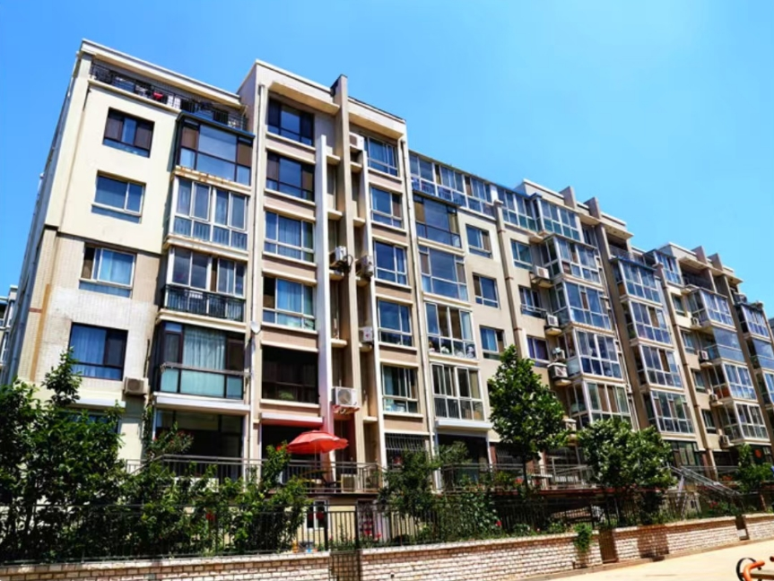

经济适用住房是政府以划拨方式提供十地，免收城市基础设施配套费等各种行政事业性收费和政府性基金，实行税收优惠政策，以政府指导价出售给有一定支付能力的低收入住房困难家庭。这类低收入家庭有一定的支付能力或者有预期的支付能力，购房人拥有有限产权。经济性是指住宅价格相对于市场价格比较适中，能够适应中低收入家庭的承受能力;适用性是指在住房设计及其建筑标准上强调住房的使用效果，而非建筑标准。
目前，经济适用住房房源建设有三个途政店划卡上比佳山从去建设;二是调整房地产开发企业开发的部分普通住宅;;是单位自建和联建，出售给本单位职工(老叫法称为集资房)。
(一)家庭申请的，家庭成员中至少一人具有本市户籍:单身居民申请的，应当具有本市户籍;
(二)家庭人均年收入或者单身居民年收入在申请受理日之前连续两年均不超过本市规定的租赁保障性住房的收入线标准;
(三)家庭财产总额或者单身居民个人财产总额不超过本市规定的租赁保障性住房的财产限额；
(四)家庭成员或者单身居民在本市无任何形式的住宅建设用地或者自有住房；
(五)家庭成员或者单身居民提出申请时未在本市和国内其他地区享受住房保障；
(六)市政府规定的其他条件。
申请廉租住房的，除具备上述(一)、(三)、 (四)、(五)、 (六)条件之外，还需提供市民政主管部门出具的有效证明文件。
注：经济适用房的具体申请条件以居住城市现行政策为准
内容来源：链家网整理